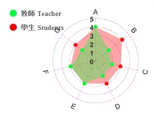
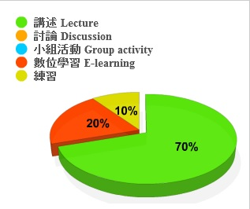

Course Introduction 課程介紹
-
學年/學期 Academic Year/Semester
-
102 學年 第 1 學期
-
課程名稱 Course Name 703009-001
-
(中 Ch.)物件導向程式設計
(英 Eng.)Object-oriented Programming -
授課教師 Instructor
-
李蔡彥
-
修別 Type of Credit
-
必修
-
學分數No. of Credits
-
3.0
-
備註 Note
-
另有實習課703955-00-1
課程目標 Course objectives
Introducing the C++ language as a powerful object-oriented programming tool for software design.
課程大綱 Course Description
本課程以介紹物件導向程式設計的觀念，及C++這個物件導向的程式語言為主。以物件導向的方式設計及維護程式，已是軟體發展的主要趨勢，其重要性無庸置疑。而C++則是目前廣為接受的物件導向語言，對學過C語言的同學，C++是很自然的延伸。在本課程中，我們將介紹物件導向語言的特點及發展歷史、物件導向語言的觀念（如封裝、多型、及繼承等），及C++語言的語法與設計等。上課的方式是以觀念講述為主，依需要才會上機說明。本課程著重程式設計的實做，因此修習者必須預期每週於課後花4-8小時寫作業。
上課進度 Class Schedule
-
Weeks Topics
- No Class
- Course Introduction
- C++ Basics: Extensions to C
- Functions
- Classes and Data Abstraction
- Classes II & Class Design
- Holiday
- Operator Overloading
- Midterm
- Inheritance
- Polymorphism
- Advanced Inheritance
- Template
- C++ Stream Input/Output
- Advanced Topics
- Final Exam
課程要求/評分標準 Course requirements/Grading standards
Midterm 25%
Final Exam 30%
Assignments 45%
Bonus ? % (participation and in-class performance)
參考書目 Textbook & references
（為維護智慧財產權，請務必使用正版書籍）
- C++ How to Program, 2nd Edition, by Deitel and Deitel, published by Prentice Hall, imported by 全華
- “C++ and Object-Oriented Programming,” by Kip R. Irvine, published by PrenticeHall International Editions, imported by 全華.
- “The C++ Programming Language,” Second Edition, by Bjarne Stroustrup.
- “C++ Primer,” Third Edition, by S. Lippman.
- “C++ Primer Plus,” Second Edition, by Stephen Prata, Waite Group Press, Imported by 松崗; translated by 蔡明志
本課程附件 Course attachments

學生自評核心能力填答率: 75% (42/56)
能力項目說明：
- 培養邏輯推理、獨立思考與創新能力
- 理解自然科學與數位科技
- 培養團隊合作的能力
- 具備有效的溝通表達能力
- 養成終身學習與自我提升能力
- 瞭解資訊科技發展趨勢與具備國際視野
- 具有專業及道德責任的認知